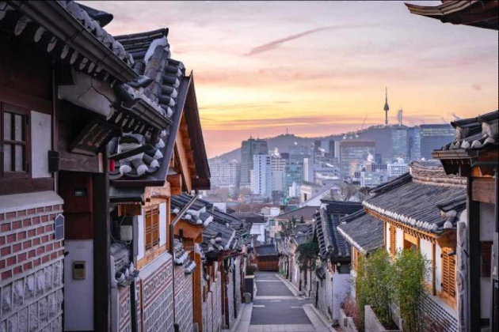
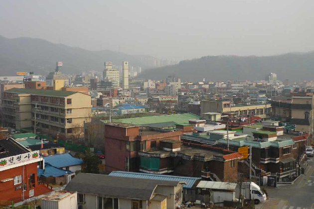

"Forgotten" (기억의 밤) is a South Korean mystery thriller film released in 2017. The story revolves around a young man named Jin-seok who moves with his family to a new house. Strange events begin to unfold as his older brother Yoo-seok returns home after a mysterious 19-day absence, but he seems different and claims not to recognize Jin-seok.
As Jin-seok tries to uncover the truth behind his brother's disappearance and strange behavior, he finds himself entangled in a complex web of secrets and lies. The movie explores themes of memory, identity, and the dark consequences of hidden truths.
"Forgotten" is a psychological thriller that follows Jin-seok and his family as they move to a new countryside home. The tranquility is shattered when Jin-seok's older brother, Yoo-seok, mysteriously disappears for 19 days. Upon his return, Yoo-seok exhibits strange behavior and claims not to recognize Jin-seok. Determined to uncover the truth behind his brother's disappearance and unsettling transformation, Jin-seok delves into a web of family secrets and deception that threatens their safety. The film intensifies into a gripping psychological drama, exploring themes of memory distortion, identity crisis, and the profound consequences of hidden truths.
Thematically, "Forgotten" examines the vulnerability of memory and personal identity, portraying how memories can be manipulated and perceptions can be distorted. It delves into the repercussions of buried secrets within familial relationships, revealing the lengths individuals will go to protect themselves and their loved ones. With its atmospheric tension and thought-provoking narrative, "Forgotten" immerses viewers in a suspenseful journey through fear, betrayal, and the unsettling power of forgotten memories.
"Forgotten" employs evocative visuals and cinematography to intensify its psychological thriller elements. The film utilizes atmospheric lighting, shadow play, and stark contrasts to create a sense of unease and isolation. Tight close-ups and claustrophobic compositions enhance the characters' paranoia and the suspenseful atmosphere, while wide shots of the countryside setting underscore the characters' vulnerability. Through its visual storytelling, "Forgotten" effectively immerses viewers in a tense narrative where every frame contributes to the unfolding psychological drama.
"Forgotten" was filmed in South Korea, with scenes set in both urban and rural settings. The countryside locations play a significant role in setting the tone of isolation and suspense, providing a stark contrast to the characters' emotional turmoil.
Seoul:Certain urban scenes were shot in Seoul, South Korea's capital city, which provided a backdrop for key moments in the film.
Gyeonggi Province:The countryside scenes, where much of the suspenseful and isolated atmosphere is portrayed, were filmed in different areas within Gyeonggi Province. This region, known for its diverse landscapes ranging from rural to suburban settings, helped create the atmospheric backdrop that is crucial to the film's narrative.
"Forgotten" culminates in a gripping and intense conclusion that resolves the mysteries and twists woven throughout the film. Without giving away spoilers, the conclusion of "Forgotten" ties together the threads of deception, identity crisis, and buried family secrets that have haunted the characters. It brings clarity to the complex relationships and motivations driving the narrative, while delivering a final revelation that may leave viewers contemplating the power of memory and the consequences of manipulation.
The film's conclusion is marked by its psychological depth and emotional resonance, offering closure to the characters' arcs while leaving a lingering sense of unease and contemplation about the nature of truth and perception. Directed by Jang Hang-jun, "Forgotten" leaves a lasting impact with its atmospheric storytelling and thought-provoking exploration of memory and identity.